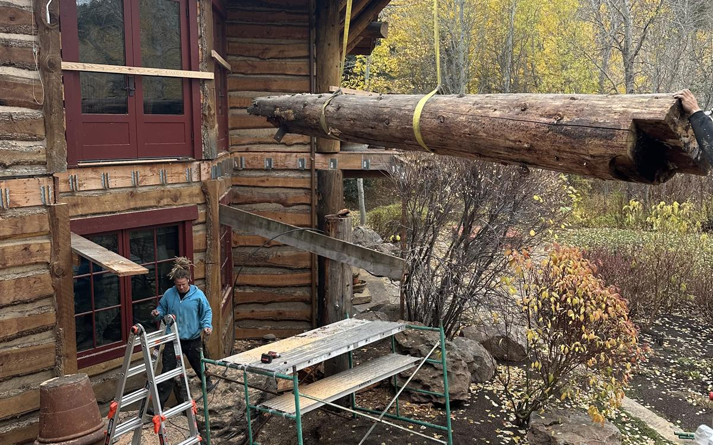

The honest answer for a custom log home in the Sun Valley area: most run 12 to 18 months of construction, with larger or more complex homes going beyond that — plus design and permitting time before a shovel touches dirt. Here's where the time actually goes, and what the mountain calendar does to it.

Phase by phase
Design and permitting (before construction)
Custom design, engineering, and permitting commonly take several months to a year depending on the complexity of the home and the review queue. Mountain-town jurisdictions like Blaine County and the cities of Ketchum, Hailey, and Sun Valley have real review processes — hillside ordinances, design review, snow-load engineering. Starting this in fall or winter puts you in position to break ground when the site opens up.
Site work and foundation
Excavation and foundation want thawed, workable ground — realistically late spring through fall up here. This phase typically runs a few months, longer on steep or rocky sites.
Log work and dry-in
Stacking log walls or raising a timber frame is the most visible stretch of the build, and the goal that drives the whole schedule is dry-in before winter — roof on, envelope closed, weather out. Hit that, and winter becomes productive interior time. Miss it, and the schedule can lose months, not weeks.
Interior through the winter
Once the home is dried in, mechanical, electrical, finishes, and cabinetry proceed through the cold months. On a well-sequenced build, winter isn't downtime at all — it's when the inside of the house happens.
What makes Sun Valley different
Two things: a short exterior season and a busy trade market. The valley's best subcontractors book out well in advance, and everyone is trying to pour foundations and close roofs in the same six warm months. A builder's real schedule skill here isn't optimism — it's sequencing: locking trades early, ordering long-lead materials before they're needed, and building the calendar backward from dry-in. That's a big part of how we run every project.
Can you speed it up?
Some. Decisive selections (finishes, fixtures, windows) prevent the most common delays, and starting design a season earlier than feels necessary is the cheapest schedule insurance there is. What you shouldn't compress is the log work itself — rushed joinery and sealing in a freeze-thaw climate is how homes end up needing restoration a decade early.
Building it from somewhere else?
Most of our clients don't live here while their home is built. We run the whole project with photo updates, clear decision points, and one point of contact — the full picture is on our out-of-state clients page. If you're planning a build and want a realistic timeline for your site and scope, call 208-897-8100 — we'll walk you through it phase by phase.